측량및지형공간정보산업기사 (2004-03-07 기출문제)
1과목: 응용측량
1. 다음 그림과 같이 노폭이 6m, 성토가 2m, 성토 경사가 1:1.5 인 성토구간 20m의 토량은 얼마인가?
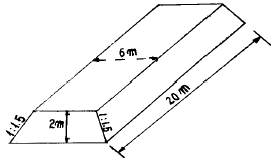
- 300m3
- 360m3
- 400m3
- 460m3
(정답률: 알수없음)

2. 토지분할에서 그림의 삼각형 ABC의 토지를 BC에 평행한 직선 DE로써 ADE:BCED = 2:3의 비로 면적을 분할 하는 경우 AD의 길이는?
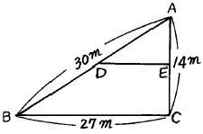
- 18.52m
- 18.97m
- 19.79m
- 23.24m
(정답률: 알수없음)
3. ABCD의 넓이는 1,000m2이다. 선 AE로 △ABE와 AECD의 넓이의 비를 2:3으로 할 때 BE의 거리는 얼마인가? (단, h=16m이다.)
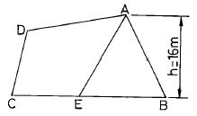
- 37m
- 40m
- 50m
- 60m
(정답률: 알수없음)
4. 다음 그림과 같은 단곡선 설치에서 I=60° , R=300m 일 때 중앙 종거 M은 얼마인가? (단, 중앙종거법에 의한다.)
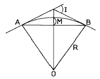
- 40.2m
- 30.2m
- 20.2m
- 10.2m
(정답률: 알수없음)
5. 하천측량시 유제부에서 평면측량의 범위는?
- 제외지 및 제내지에서 100m 이내
- 제외지 및 제내지에서 200m 이내
- 제외지 및 제내지에서 300m 이내
- 제외지 및 제내지에서 400m 이내
(정답률: 알수없음)
6. 유속측정에 있어서 수심(H)에 대하여 0.2H, 0.6H, 0.8H 깊이의 유속이 0.562m/s, 0.497m/s, 0.364m/s 이었다면 3점법에 의한 평균유속은?
- 0.46m/s
- 0.48m/s
- 0.50m/s
- 0.52m/s
(정답률: 알수없음)
7. 구조물 경관예측을 위한 사전 조사항목으로 가장 거리가 먼 것은?
- 식생
- 지형
- 현황사진
- 지하배관
(정답률: 알수없음)
8. 도로의 중심선을 따라 20m 간격의 종단측량을 실시하여 다음 표와 같은 결과를 얻었다. 측점1과 측점3의 지반고를 연결하는 도로 계획선을 설정한다면 이 계획선의 구배는 얼마인가?
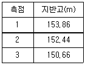
- -1.6%
- -3.2%
- -4.0%
- -8.0%
(정답률: 알수없음)
9. 하천의 평균유속을 이점법으로 구하고자 할 때 수면에서 수심의 어느점을 택하여 측정하는가?
- 수면에서 수심의 1/5, 4/5 지점
- 수면에서 수심의 2/5, 4/5 지점
- 수면에서 수심의 3/5, 4/5 지점
- 수면에서 수심의 1/5, 3/5 지점
(정답률: 알수없음)
10. 터널측량에 대한 설명으로 옳지 않은 것은?
- 갱내의 곡선 설치는 일반적으로 지상에서와 같이 편각법, 중앙종거법 등을 사용한다.
- 터널의 길이방향은 삼각측량 또는 트래버스 측량으로 행한다.
- 갱내의 측량에서는 기계의 십자선 또는 잣눈 표척에 조명이 필요하다.
- 터널측량의 분류는 갱외측량, 갱내측량, 갱내· 외 연결측량으로 나눈다.
(정답률: 알수없음)
11. 경관평가 요인에서 시설물에 압박감을 느끼기 시작하는 수평시각(θH)은 얼마인가?
- 0° ＜ θH ＜ 10°
- 60° ＜ θH
- 30° ＜ θH ＜ 60°
- 10° ＜ θH ＜ 30°
(정답률: 알수없음)
12. 도로의 곡률이 0에서 어떤 값으로 급격히 변화하기 때문에 발생되는 횡 방향의 힘을 없애기 위해 곡률을 0에서 점점 증가시켜 일정한 값에 이르도록 직선부와 곡선부에 삽입하는 곡선은?
- 완화곡선
- 복심곡선
- 반향곡선
- 단곡선
(정답률: 알수없음)
13. 터널측량에서 갱내 2지점의 좌표가 A점(1250m, 950m), B점(850m, 650m)과 높이는 A지점(226.55m), B지점(2⑤.44m)에서 갱도를 A점에서 B점으로 굴진 할 경우 경사각은?
- -1° 59′ 15″
- 1° 59′ 15″
- -2° 25′ 03″
- 2° 25′ 03″
(정답률: 알수없음)
14. 토지구획 정리사업을 위하여 점고법에 의한 토공량을 계산한 결과 6,000m3 이었다. 절토량과 성토량을 같게 하려면 지반의 높이는 얼마인가? (단, 단형의 가로 10m, 세로 10m, 단형의 수는 80개 임.)
- 0.67m
- 0.75m
- 1.33m
- 1.50m
(정답률: 알수없음)
15. 유속측정으로 부자를 사용할 때 바람직한 유하거리는?
- 영향이 없다.
- 짧을수록 좋다.
- 강 폭의 1~2배
- 강 폭의 1/2배 정도
(정답률: 알수없음)
16. 그림과 같은 토지의 한 꼭지점을 지나는 직선 AD로 면적을 m:n=1:3의 비율로 분할하고자 할 경우 BC의 길이가 50m일 때 BD의 길이는?
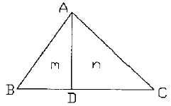
- 9.5m
- 10.5m
- 11.5m
- 12.5m
(정답률: 알수없음)
17. 반지름(R)이 150m, 교각(I)가 45° 인 단곡선을 설치하려고 할 때 접선길이(T.L.)와 곡선길이(C.L.)는?
- T.L. = 52.13m, C.L. = 117.81m
- T.L. = 52.13m, C.L. = 127.81m
- T.L. = 62.13m, C.L. = 127.81m
- T.L. = 62.13m, C.L. = 117.81m
(정답률: 알수없음)
18. 터널측량 중 A점에 기계를 세우고 B점에 스타프를 거꾸로 메달아 천장의 높이를 측정하여 1.03m라는 측정값을 얻었다면 B점의 지반고는? (단, A점의 지반고는 10.30m, 기계고는 1.44m)
- 10.55m
- 11.64m
- 12.77m
- 13.25m
(정답률: 알수없음)
19. 종단측량에 의하여 종단면도를 작성하고자 한다. 다음 중 종단면도에 표시되지 않는 것은?
- 횡단구배
- 각 측점의 계획고
- 각 측점의 지반고
- 기점에서 각 측점까지의 추가거리
(정답률: 알수없음)
20. 터널측량에서 갱내 고저측량에 대한 다음 설명 중 틀린것은?
- 터널의 굴삭이 진행됨에 따라 갱구부근에 이미 설치된 고저기준점(B.M)으로부터 갱내의 B.M에 고저측량으로 연결하여 갱내의 고저를 관측한다.
- 갱내의 B.M은 갱내작업에 의하여 파손되지 않는 곳에 설치가 쉽고 측량이 편리한 장소를 선택한다.
- 갱내의 고저측량에는 갱외와 달리 표척과 레벨을 사용하지 않는다.
- 갱내의 표척은 3m 또는 그 이하의 것을 사용하고 천장에 B.M을 설치할 경우에는 5m 표척을 사용한다.
(정답률: 알수없음)
2과목: 사진측량 및 원격탐사
21. 토목공사와 관계되는 사항을 조사할 때 사진판독의 주대상이 아닌 것은?
- 인공구조물
- 토지이용
- 식생 및 지질
- 광물질
(정답률: 알수없음)
22. 다음은 표정작업을 나열한 것이다. 작업순서가 맞게 나열된 것은?
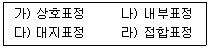
- 가 → 나 → 다 → 라
- 라 → 다 → 나 → 가
- 나 → 가 → 다 → 라
- 다 → 나 → 가 → 라
(정답률: 알수없음)
23. 동서방향으로 20km, 남북방향으로 10km의 장방형 지형에 대하여 축척 1/15,000의 항공사진으로 종중복도 60%, 횡중복도 30%라고 했을 경우의 필요한 모형의 수는? (단, 사진의 크기는 23cm×23cm이고 안전율은 30%, 면적에 의한 간이계산법에 의한다.)
- 88~90매
- 78~80매
- 68~70매
- 48~50매
(정답률: 알수없음)
24. 입체시의 조건에 대한 설명으로 알맞은 것은?
- 50% 이상 중복 촬영한 한 쌍의 사진이면 가능하다.
- 지상과 공중에서 촬영한 각각 1매의 사진이면 가능하다.
- 광각 사진이면 1매로 가능하다.
- 평행하게 촬영한 사진이 3매 이상 있어야 한다.
(정답률: 알수없음)
25. 도화기를 투영법에 의하여 분류할 때 종류가 아닌 것은?
- 2급 도화기
- 기계적 도화기
- 광학적 도화기
- 여색광학적 도화기
(정답률: 알수없음)
26. 화면크기 23cm×23cm의 카메라로 평탄지를 촬영고도 3,000m에서 연직 촬영했을 때 피사면적이 21.16km2 이었다. 이 카메라의 초점거리는 얼마인가?
- 15cm
- 18cm
- 21cm
- 25cm
(정답률: 알수없음)
27. 항공사진의 종류 중에서 지질, 토양, 수자원 및 삼림조사 등의 판독에 많이 이용되고 있는 것은?
- 팬크로 사진
- 천연색 사진
- 적외선 사진
- 위색 사진
(정답률: 알수없음)
28. 종중복도 60%로 단촬영 경로로 촬영한 축척 1/5000의 항공사진이 있다. 사진의 크기가 20cm×20cm라고 할 때 지상의 유효면적은?
- 0.1km2
- 0.2km2
- 0.3km2
- 0.4km2
(정답률: 알수없음)
29. 다음 중 사진판독의 요소가 아닌 것은?
- 색조
- 질감
- 음영
- 식생
(정답률: 알수없음)
30. 축척 1/20,000, 초점거리 150mm, 화면크기 23cm×23cm의 카메라로 찍은 등고도 연직사진상에 주점기선장이 96.6mm로 측정되었다. 인접사진과의 중복도(overlap)는?
- 56%
- 58%
- 60%
- 62%
(정답률: 알수없음)
31. 표정요소중 κ1과 κ2를 조합하면 어느 표정요소의 운동과 같은 효과가 있는가?
- by
- bz
- w
- ø1
(정답률: 알수없음)
32. 어느 지형의 한 지점을 초점거리 150mm인 사진기로 비행고도 3,600m에서 촬영을 하여 축척1/20,000의 사진을 얻었다면 이 지점의 높이는?
- 300m
- 400m
- 500m
- 600m
(정답률: 알수없음)
33. 항공삼각측량의 계획에서 기계적 항공삼각측량의 경우 단일 경로의 모형수는 대체로 얼마로 시행하는가?
- 40∼45 모델
- 30∼35 모델
- 20∼25 모델
- 10∼15 모델
(정답률: 알수없음)
34. 다음중 상호표정 인자로서 알맞는 것은?
- bx, by, bz, κ , ψ
- bx, by, κ , ψ , λ
- by, bz, κ , ψ , λ
- by, bz, κ , ψ , ω
(정답률: 알수없음)
35. 편위수정을 거친 사진을 집성하여 만든 사진지도는?
- 중심투영 사진지도
- 약조정집성 사진지도
- 반조정집성 사진지도
- 조정집성 사진지도
(정답률: 알수없음)
36. 사진측량의 특징으로 옳지 않은 것은?
- 지상측량에 비해 외업시간이 짧고 내업시간이 길다.
- 도상 각 부분과 기준점의 정밀도가 비슷하고 개인적인 원인에 의한 오차가 적게 발생한다.
- 측량구역의 면적이 적을수록 경제적이며 소축척보다는 대축척이 더욱 경제적이다.
- 지도는 정사투영상이나 사진은 중심투영상이다.
(정답률: 알수없음)
37. 촬영고도를 다르게 촬영(2단 촬영)하고 촬영경로 단위로 촬영고도를 바꾸는 것은 비고가 촬영고도의 몇 %를 초과하는 경우인가?
- 10 %
- 20 %
- 40 %
- 60 %
(정답률: 알수없음)
38. 사진상에서 기복변위량에 대한 설명으로 틀린 것은?
- 연직점에서의 거리와 비례한다.
- 비고와 비례한다.
- 초점거리와는 관계가 없다.
- 촬영고도와 비례한다.
(정답률: 알수없음)
39. 다음 중 사진의 축척을 결정하는데 고려할 요소로 가장 거리가 먼 것은?
- 사용목적, 사진기의 성능
- 사용되는 사진기, 소요 정밀도
- 도화 축척, 등고선 간격
- 지방적 특색, 기상관계
(정답률: 알수없음)
40. 다음은 주점에 대한 설명으로 틀린 것은?
- 렌즈중심으로부터 사진에 내린 수선의 발이다.
- 렌즈의 광축과 사진면이 교차하는 점이다.
- 항공사진에선 마주보는 지표의 연결교차점이 일반적인 주점이다.
- 사진의 중심으로 경사사진에는 연직점과 일치한다.
(정답률: 알수없음)
3과목: GIS 및 GPS
41. 다음 도형 요소를 설명한 것 중 바르게 설명한 것은?
- 점은 위치를 나타내는 2차원으로서 지도 위에 특성을 나타내는 도형요소이다.
- 선은 두 점을 잇는 직선 또는 곡선 및 그 조합이다.
- 면적은 지도 위에 도형적으로 나타난 이름이고, 도로명, 지명, 고유번호 차원을 기록한 것이다.
- 영상소는 1차원적 표현이다.
(정답률: 알수없음)
42. 정오차에 관한 다음 설명 중 틀린 것은?
- 원인이 명확한 오차
- 기계의 특성과 눈금에 의한 기계적 오차
- 오차의 크기나 방향이 일정하지 않은 오차
- 온도, 습도, 기압에 의한 물리적인 오차
(정답률: 알수없음)
43. 폴을 시준할 때 밑부분을 시준하는 주요한 이유는?
- 정오차를 제거하기 위하여
- 착오의 우려를 제거하기 위하여
- 우연오차를 제거하기 위하여
- 밑부분이 잘 보이기 때문에
(정답률: 알수없음)
44. 다음 설명중 래스터 정보의 압축방법이 아닌 것은?
- Chain Code
- C/A Code
- Run-Length Code
- Block Code
(정답률: 알수없음)
45. △ABC 토지의 1변 BC위에 점 P를 AB위의 점 Q에 연결한 직선 PQ에 의해 △ABC의 면적을 2등분한다고 하면 BQ의 길이를 얼마로 하면 되겠는가? (단, AB=40m, BC=48m, BP=30m)
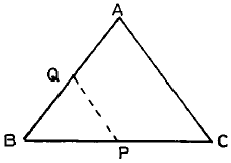
- 32m
- 35m
- 36m
- 38m
(정답률: 알수없음)
46. 20mm의 외심오차가 있는 앨리데이드로 축척 1/600인 측량을 할 때 점 A에서 50m 떨어진 목표 B를 시준하여 방향선을 그으면 그 방향선은 외심오차 때문에 도상에서 얼마의 위치오차가 생기겠는가?
- 0.03mm
- 0.12mm
- 0.44mm
- 0.25mm
(정답률: 알수없음)
47. 트래버어스 측량의 순서로서 옳은 것은?
- 조표 → 선점 → 관측 → 답사 → 방위각 측정
- 조표 → 선점 → 답사 → 관측 → 방위각 측정
- 답사 → 선점 → 조표 → 관측 → 방위각 측정
- 선점 → 답사 → 조표 → 관측 → 방위각 측정
(정답률: 알수없음)
48. 그림에서 측선 CD 의 거리는?
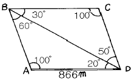
- 500m
- 550m
- 600m
- 650m
(정답률: 알수없음)
49. 위치상 중앙에 있는 P점의 높이를 측정코자 A, B, C, D 4점의 수준점에서 측정한 결과가 다음과 같을 때 P점의 최확치는?
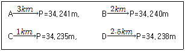
- 34.231m
- 34.238m
- 34.243m
- 34.249m
(정답률: 알수없음)
50. 다음 그림에서 CA의 방위각은? (단, ∠A = 48° 13' 59", ∠B = 84° 32' 40", ∠C = 47° 13' 21", θAB = 82° 46' 53")
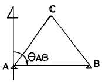
- 214° 32' 54″
- 325° 27' 06″
- 145° 27' 06″
- 34° 32' 54″
(정답률: 알수없음)
51. 전체길이 30m인 줄자가 표준길이 보다 7.5mm 길 때 이 줄자를 사용하여 420m를 측정하였다면 보정량은 얼마인가?
- 0.085m
- 0.1⑤m
- -0.085m
- -0.1⑤m
(정답률: 알수없음)
52. 그림과 같은 단삼각망의 관측결과가 α=58° 43' 25", β=45° 16' 30", γ=75° 59' 45"라고 할 때 조정에 관한 설명으로 옳은 것은? (단, AB는 기선임)
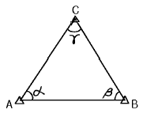
- 폐합오차가 20〃이므로 각 보정량 6〃를 α에, 7〃를 β및 γ에 각각 더하여 보정한다.
- 조건식의 총수는 2개이고 그 중 1개는 각 조건식, 나머지 1개는 측점조건식이다.
- 조건식의 총수는 1개이고 각 조건식이다.
- 폐합오차가 없으므로 관측값 보정이 필요없다.
(정답률: 알수없음)
53. 수준측량의 후시에 대한 설명으로 가장 알맞은 것은?
- 미지점에 세운 표척을 읽음값
- 기지점에 세운 표척을 읽음값
- 중간점에 세운 표척을 읽음값
- 측점에 세운 표척을 읽음값
(정답률: 알수없음)
54. 그림과 같이 각이 관측한 결과 ∠A=27° 37' 44", ∠B=26° 45' 30", ∠C=54° 23' 35"이었다. ∠A, ∠B, ∠C의 보정치는 얼마인가?
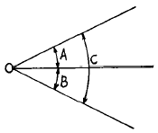
- ∠A=+7" ∠B=+7" ∠C=+7"
- ∠A=-7" ∠B=-7" ∠C=-7"
- ∠A=-7" ∠B=+7" ∠C=-7"
- ∠A=+7" ∠B=+7" ∠C=-7"
(정답률: 알수없음)
55. 지구를 구체로 취급할 때 위도 1° 사이의 거리는? (단, 지구의 반지름은 6,370㎞로 계산)
- 약 91㎞
- 약 101㎞
- 약 111㎞
- 약 121㎞
(정답률: 알수없음)
56. 수치표고모델(DEM:Digital Elevation Model)의 응용분야에 대한 설명으로 관계가 없는 것은?
- 도시의 성장을 분석하기 위한 시계열정보
- 도로의 부지 및 댐의 위치선정
- 수치 지형도 작성에 필요한 고도정보
- 3D를 통하여 광산, 채석장, 저수지 등의 설계
(정답률: 알수없음)
57. 등고선 간격은 축척에 따라 다르다. 1/50,000 지형도에서 등고선 간격에 대한 설명 중 맞는 것은?
- 주곡선 5m, 간곡선 2.5m, 조곡선 1.25m
- 주곡선 10m, 간곡선 5m, 조곡선 2.5m
- 주곡선 20m, 간곡선 10m, 조곡선 5m
- 주곡선 100m, 간곡선 50m, 조곡선 25m
(정답률: 알수없음)
58. 시거정수를 정하기 위하여 트랜싯의 제원을 조사한 결과 초점거리가 250mm, 상하시거선 간격이 2.6mm, 망원경 길이가 24cm였다. 승계수 K는 얼마인가?
- 100
- 98
- 96
- 94
(정답률: 알수없음)
59. 트래버어스 계산 결과에서 측점 3의 합위거, 합경거는?
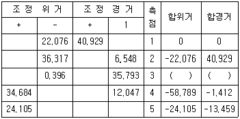
- -58.393, 34.381
- 34.381, -58.393
- -24.451, 64.542
- 64.542, -24.451
(정답률: 알수없음)
60. 다음 중 감지기(Sensor)의 종류가 아닌 것은?
- 다중파장대 스캐너
- 레이다(Radar)
- 레이저 거리관측기
- 플로터(Plotter)
(정답률: 알수없음)
4과목: 측량학
61. 레벨 등 성능검사를 받아야 하는 측량기기는 그 성능검사를 몇 년마다 하여야 하는가?
- 3년
- 2년
- 1년
- 수시
(정답률: 알수없음)
62. 측량업의 등록신청서에 첨부할 서류로서 틀린 것은?
- 법인인 경우에 등기부등본
- 측량업용 장비명세서
- 사업계획서
- 보유한 측량기술인력의 명단
(정답률: 알수없음)
63. 측량협회의 설립목적으로 틀린 것은?
- 측량업자 및 측량기술자의 품위보전
- 측량에 관한 기술의 향상
- 측량제도의 건전한 발전
- 측량법령의 제· 개정
(정답률: 알수없음)
64. 다음 설명중 옳은 것은?
- 국토지리정보원장(국립지리원장)은 기본측량의 측량성과를 고시할 수 없다.
- 국토지리정보원장(국립지리원장)은 기본측량의 측량성과와 측량기록을 보관할수 있으나 이를 일반인에게 열람시킬 수 없다.
- 국토지리정보원장(국립지리원장)은 건설교통부령이 정하는 바에 의하여 기본측량의 측량성과를 사용하여 지도 기타 필요한 간행물을 간행하여 발매 또는 배포하여야 한다.
- 국토지리정보원장(국립지리원장)은 간행된 지도등을 발매 또는 배포하게 하기 위하여 대통령의 승인을 얻어 대행업자를 지정할 수 있다.
(정답률: 알수없음)
65. 공공측량의 측량 성과와 측량 기록을 보관하고 이를 일반인에게 열람시켜야 하는 자는?
- 국토지리정보원장(국립지리원장)
- 시장 또는 도지사
- 건설교통부장관
- 공공측량계획기관
(정답률: 알수없음)
66. 2년 이하의 징역 또는 500만원 이하의 벌금에 해당되지않는 것은?
- 측량업의 등록을 하지 않고 측량업을 한자
- 측량성과를 고의로 사실과 다르게 한자
- 기본측량을 위하여 설치된 측량표를 이전, 손괴, 기타 그 효용을 해하는 행위를 한자
- 부정한 방법으로 측량업의 등록을 한자
(정답률: 알수없음)
67. 지도도식 규칙을 적용하지 않아도 되는 경우는?
- 기본측량 및 공공측량의 성과로서 지도를 간행하는 경우
- 군사용의 지도와 그 간행물
- 기본측량의 성과를 이용하여 지도에 관한 간행물을 발간하는 경우
- 공공측량의 성과를 이용하여 지도에 관한 간행물을 발간하는 경우
(정답률: 알수없음)
68. 관할구역안에 있는 기본측량을 위하여 설치한 측량표를 감시하여야 하는 자는?
- 도지사
- 국토지리정보원장(국립지리원장)
- 군수
- 경찰청장
(정답률: 알수없음)
69. 측량에 관한 벌칙 중 200만원이하의 과태료에 처할 수 있는 사항은?
- 부정한 방법으로 측량업의 등록을 한 자
- 부정한 방법으로 성능검사를 받은 자
- 부정한 방법으로 성능검사를 한 자
- 고의로 측량성과를 사실과 다르게 한 자
(정답률: 알수없음)
70. 기본측량의 실시로 인하여 손실을 받은자가 규정에 의하여 재결을 신청하고자 할 때 재결신청서에 기재할 사항으로 잘못된 것은?
- 측량의 종류
- 손실발생의 사실
- 측량기술자의 성명 및 주소
- 보상받고자 하는 손실액과 그 내역
(정답률: 알수없음)
71. 측량법에 따른 중급기술자에 해당되지 않는 기술자는?
- 측량및지형공간정보기사의 자격을 가진 자로서 4년이상 측량업무를 수행한 기술자격자
- 측량및지형공간정보산업기사의 자격을 가진 자로서 7년이상 측량업무를 수행한 기술자격자
- 석사학위를 가진 자로서 2년이상 측량업무를 수행한 학력· 경력자
- 학사학위를 가진 자로서 6년이상 측량업무를 수행한 학력· 경력자
(정답률: 알수없음)
72. 공공측량의 작업규정에 관한 다음 사항 중 옳지 않은 것은?
- 작업규정은 국토지리정보원장(국립지리원장)의 승인을 받아야 한다.
- 공공측량은 국토지리정보원장(국립지리원장)이 승인한 작업규정에 의하여 실시한다.
- 공공측량은 그 실시후에는 반드시 작업규정과 부합 여부를 검사한다.
- 공공측량의 작업규정에는 작업기간 및 작업방법이 포함되어야 한다.
(정답률: 알수없음)
73. 국토지리정보원장(국립지리원장)이 측량제도 및 기술의 발전을 위하여 실시할 시책 중 옳지 않은 것은?
- 수치지형정보의 표준화
- 측량용역업의 해외진출 활성화
- 지도제작기술의 개발 및 자동화
- 정밀측량기기의 개발
(정답률: 알수없음)
74. 기본측량의 실시공고는?
- 건설교통부장관이 한다.
- 국토지리정보원장(국립지리원장)이 한다.
- 서울특별시장, 광역시장 또는 도지사가 한다.
- 측량작업기관이 한다.
(정답률: 알수없음)
75. 측량법에서 사용하는 용어의 정의 중 옳지 않은 것은?
- 기본측량이라 함은 모든 측량의 기초가 되는 측량이다.
- 측량기록이라 함은 측량성과를 얻을 때가지의 측량에 관한 작업의 기록을 말한다.
- 측량작업기관이라 함은 측량계획기관의 지시 또는 위임에 의하여 측량에 관한 작업을 실시하는 자를 말한다.
- 일반측량이라 함은 기본측량 및 공공측량을 말한다.
(정답률: 알수없음)
76. 측량기술자는 그가 작성한 측량도서에 서명· 날인하여야 하는데 이때 기재할 사항으로 틀린 것은?
- 소속업체명
- 국가기술자격번호
- 학력· 경력자관리번호
- 최종학력
(정답률: 알수없음)
77. 측량법에서 정의한 측량업의 종류에 속하지 않는 것은?
- 측지측량업
- 연안조사측량업
- 지도제작업
- 지적측량업
(정답률: 알수없음)
78. 공공측량 및 일반측량에서 제외되는 측량으로 틀린 것은?
- 국지적 측량으로서 건설교통부장관이 고시하는 측량
- 지적법에 의한 지적측량
- 수로업무법에 의한 수로측량
- 지하시설물 측량
(정답률: 알수없음)
79. 우리나라의 지도에 사용되는 기호 및 선의 굵기는 누가 정하는가?
- 국토지리정보원장(국립지리원장)
- 건설교통부장관
- 행정자치부장관
- 국토연구원장
(정답률: 알수없음)
80. 1:25,000 지형도의 주곡선(主曲線) 간격(間隔)은?
- 5m
- 10m
- 15m
- 20m
(정답률: 알수없음)